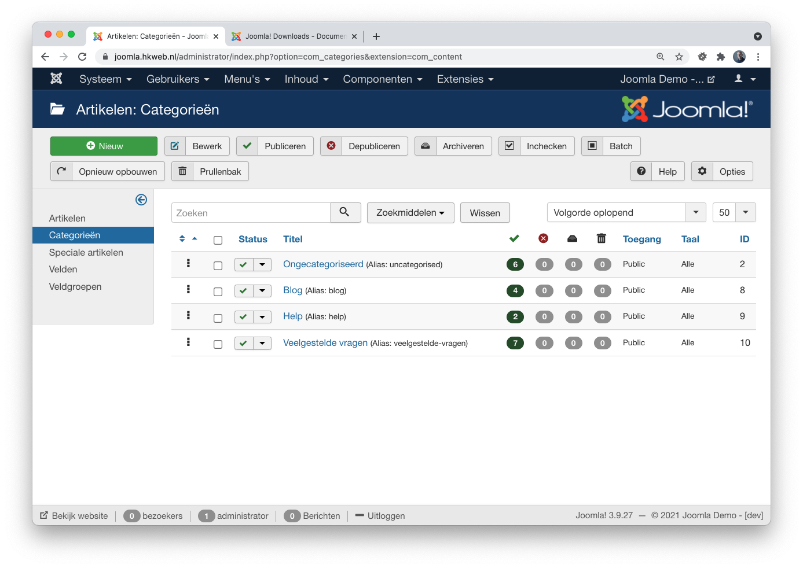

FAQ Structured Data
Presentatie van Hans Kuijpers
FAQ Structured Data
- FAQ = Frequently Asked Questions => veelgestelde vragen
- Structured Data = extra code die Google zal helpen om de content van een webpagina beter te begrijpen
Resultaten van zoekopdracht met FAQ structured data
FAQ item is aanklikbaar en toont informatie vanuit de website

Hetzelfde item, maar dan op de website
Stappenplan voor inmplementatie
- Zorg voor content (vraag & antwoord)
- Maak override op mod_articles_category
- Testen
Zorg voor content
(vraag & antwoord)
- Joomla Administrator > Inhoud > Categorieën
- Nieuwe categorie 'veelgestelde-vragen'
- Joomla Administrator > Inhoud > Artikelen
- Per vraag een nieuw artikel
- Titel = vraag
- Body = antwoord
Zorg voor content
(vraag & antwoord)
Robots = noindex, follow
Voorkom dat categorie en individuele artikelen indexeerbaar zijn.
Voorbeeld data vanuit joomla.org
Joomla com_content categorie
Joomla com_content artikelen
Joomla mod_articles_category
Default weergave
Alternate layout mod_articles_category/faq.php
<?php defined('_JEXEC') or die; ?>
<div class="category-module-faq<?php echo $moduleclass_sfx; ?> mod-list">
<?php foreach ($list as $item) : ?>
<details>
<summary>
<?php echo $item->title; ?>
</summary>
<div class="details__content">
<p class="mod-articles-category-introtext">
<?php echo $item->introtext; ?>
</p>
</div>
</details>
<?php endforeach; ?>
</div>Aangepaste weergave <details> & <summary>
Voorbeeld code structured data FAQPage
developer.google.com
<script type="application/ld+json">
{
"@context": "https://schema.org",
"@type": "FAQPage",
"mainEntity": [{
"@type": "Question",
"name": "Wat is vraag 1?",
"acceptedAnswer": {
"@type": "Answer",
"text": "<p>Het antwoord </p>"
}
}, {
"@type": "Question",
"name": "Wat is vraag 2?",
"acceptedAnswer": {
"@type": "Answer",
"text": "<p>Het antwoord </p>"
}
}
}
<script>Alle informatie zit in een script tag van type JSON-LD
<script type="application/ld+json">
{
}
</script>Dan duidelijk maken wat we zijn en hoe we praten
"@context": "https://schema.org",
"@type": "FAQPage",
"mainEntity": []Meer info op https://schema.org/FAQPage en https://developers.google.com/search/docs/data-types/faqpag
Items toevoegen met vraag & antwoord
{
"@type": "Question",
"name": "Staat hier een toffe vraag?",
"acceptedAnswer": {
"@type": "Answer",
"text": "<p>Maar natuurlijk... dit is het antwoord op de toffe vraag.</p>"
}
},Na de komma volgt weer een nieuwe vraag.
Alle informatie samen vormt dus...
<script type="application/ld+json">
{
"@context": "https://schema.org",
"@type": "FAQPage",
"mainEntity": [{
"@type": "Question",
"name": "Wat is vraag 1?",
"acceptedAnswer": {
"@type": "Answer",
"text": "<p>Het antwoord </p>"
}
}, {
"@type": "Question",
"name": "Wat is vraag 2?",
"acceptedAnswer": {
"@type": "Answer",
"text": "<p>Het antwoord </p>"
}
}
}
<script>En dat in een JLayout in je template
html/data-type/faqpage.php
<?php defined('JPATH_BASE') or die;
/** @var array $displayData */
extract($displayData);
if (!empty($displayData))
{
$data = [
'@context' => 'https://schema.org',
'@type' => 'FAQPage',
'mainEntity' => [],
];
foreach ($displayData as $faq)
{
$data['mainEntity'][] = [
'@type' => 'Question',
'name' => $faq->title,
'acceptedAnswer' => [
'@type' => 'Answer',
'text' => htmlspecialchars_decode($faq->introtext)
]
];
}
}
?>
<script type="application/ld+json"><?php echo json_encode($data); ?></script>Oproepen vanuit je mod_articles_category override
oude situatie
<?php defined('_JEXEC') or die; ?>
<div class="category-module-faq<?php echo $moduleclass_sfx; ?> mod-list">
<?php foreach ($list as $item) : ?>
<details>
<summary>
<?php echo $item->title; ?>
</summary>
<div class="details__content">
<p class="mod-articles-category-introtext">
<?php echo $item->introtext; ?>
</p>
</div>
</details>
<?php endforeach; ?>
</div>nieuwe situatie
<?php defined('_JEXEC') or die; ?>
use Joomla\CMS\Layout\LayoutHelper;
echo LayoutHelper::render('data-type.faqpage', $list);
<div class="category-module-faq<?php echo $moduleclass_sfx; ?> mod-list">
<?php foreach ($list as $item) : ?>
<details>
<summary>
<?php echo $item->title; ?>
</summary>
<div class="details__content">
<p class="mod-articles-category-introtext">
<?php echo $item->introtext; ?>
</p>
</div>
</details>
<?php endforeach; ?>
</div>Aan de buitenkant zie je geen verschil
Onder de motorkap wel